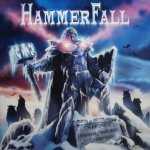

|
|
||
Hammerfall : Chapter V: Unbent, Unbowed, Unbroken (2005) |
|

http://www.hammerfall.net |
1. Secrets 6:06 |
8.2/10 |
|
El quinto álbum de estudio de la banda sueca Hammerfall insiste una vez más en revisitar el heavy metal clásico, tal y como llevan haciendo desde su primer trabajo. Ni un ápice se han movido de sus planteamientos iniciales, y de momento no parecen faltarles las ganas de seguir ahí. Ya el riff inicial de "Secrets" crea el ambiente propicio para entrar en un mundo de caballeros templarios luchando por la justicia: a partir de ahí un riff de guitarra sencillo como base, el doble bombo escanciado con acierto y un estribillo resultón dan como resultado un buen tema, con el sonido más clásico de la banda. "Blood bound" también podría ser el segundo corte de cualquiera de sus discos anteriores, con ese medio tiempo muy marcado, la melodiosa voz de Joacim Cans y los coros en el estribillo. Más rápido es "Fury of the wild", con cierto toque a lo Judas Priest y otro pegadizo estribillo. El inevitable martillo de la banda surge en "Hammer of justice", sobre otro de sus característicos riffs de guitarra, y otra vez acompañado de los coros. Y hablando de cosas inevitables, "Never, ever" es la aceptable balada de este disco, con la misma atmósfera triste de siempre, la misma voz un pelín dulzona de siempre, con una primera parte acústica y una segunda distorsionada, como siempre. "Born tu rule" recupera la dureza, y los sonidos más típicos del heavy metal, los coros en el puente y un estribillo fácilmente recordable. "The templar flame" es un medio tiempo característico de la banda, con un estribillo interesante, tampoco espectacular, y poco más que se pueda destacar. "Imperial" es una canción instrumental tocada sólo con el bajo y la guitarra y en acústico, que no está mal pero que rompe el ritmo del álbum y no es precisamente una demostración de virtuosismo. "Take the black" retoma la velocidad y los coros, lo que junto a una buena melodía y un estribillo memorable conforman una buena canción. Después de una sobrecogedora narración inicial, "Knights of the 21st century" aporta más épica, más melodía, más coros, otro buen estribillo, pero todo ello con un ritmo quizás demasiado lento que hace que el desarrollo de la primera parte de esta pieza se alargue demasiado; la segunda parte se acelera e introduce variaciones, así que en conjunto queda un tema bueno, aunque no sobresaliente. Siendo "Legacy of Kings" mi disco favorito de Hamerfall, y "Renegade" el que menos me gustó, éste podría ocupar el segundo o el tercer puesto. Este es un buen disco de Hammerfall, pero si no te gustaba la banda, seguirá sin gustarte. |
||
- Crítica escrita por Rubén Béjar - |
||